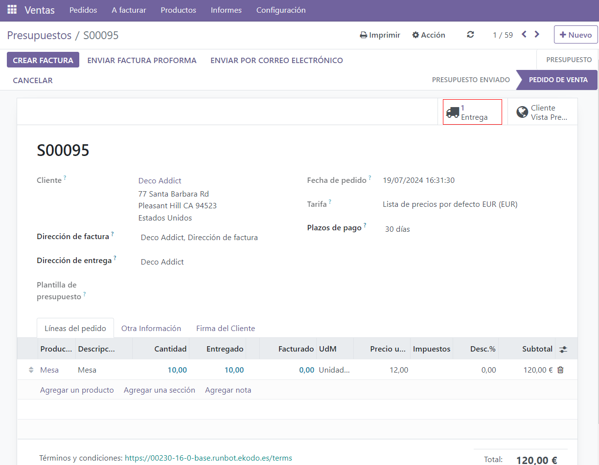
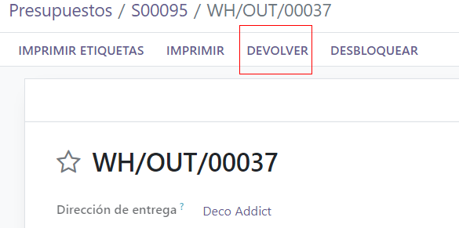
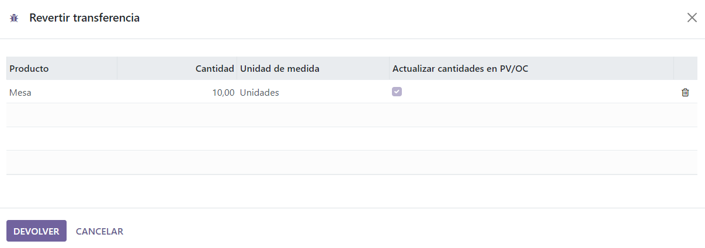
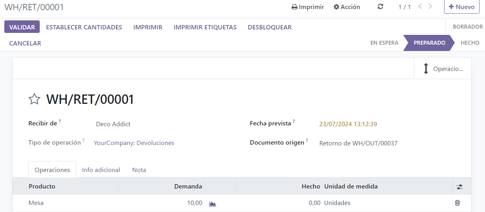
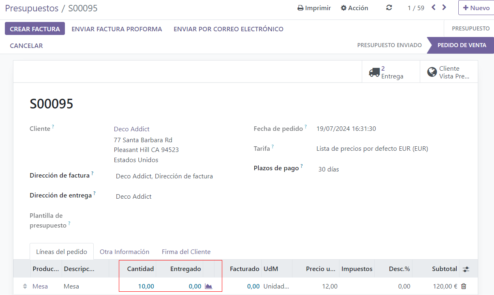
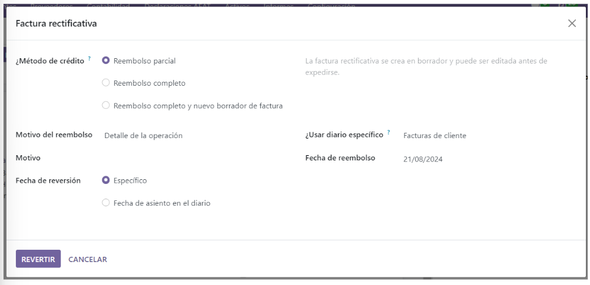
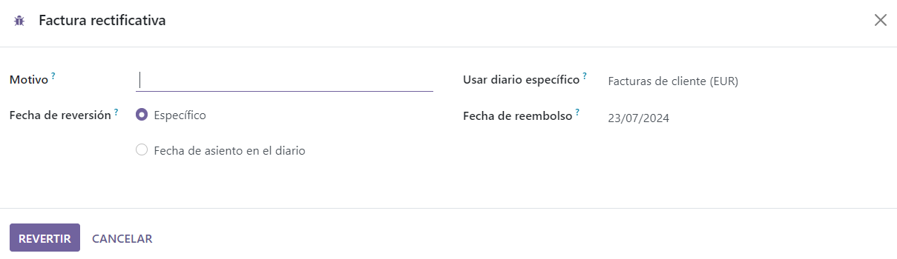

Devoluciones y reembolsos¶
La aplicación Ventas de Odoo le proporciona dos maneras distintas de procesar las devoluciones. El método a utilizar depende de si ya emitió o no una factura.
Antes de facturar¶
Las devoluciones se completan mediante traslados revertidos cuando un cliente decide devolver un producto antes de que envíe la factura o la valide.
Nota
Para usar los traslados revertidos también debe tener instalada la aplicación Inventario.
Para iniciar una devolución antes del proceso de facturación, vaya a la aplicación Ventas, seleccione la orden de venta correspondiente y haga clic en el botón inteligente Entrega para abrir la orden de entrega vinculada.
Una vez que se encuentre en la orden de entrega validada, haga clic en Devolver.
Esta acción abre la ventana emergente Revertir traslado.
De forma predeterminada, la cantidad coincide con las cantidades validadas en la orden de entrega. Actualice las cantidades en caso de que sea necesario. Haga clic en el icono 🗑️ (papelera) que se ubica junto a la línea de un artículo para eliminarlo de la devolución.
A continuación, haga clic en Devolver para confirmar la devolución. Esto genera una nueva operación de almacén para los productos devueltos entrantes.
Una vez recibida la devolución, el equipo de almacén valida la operación de almacén con el botón Validar. Luego, en la orden de venta original, la cantidad entregada se actualiza para incluir la diferencia entre las cantidades validadas al inicio y las cantidades devueltas.
Al crear una factura, el cliente recibe una factura solo por los productos que se quedó, si los hay.
Después de facturar¶
A veces los clientes devuelven un artículo después de recibirlo o de pagar su factura. En estos casos, no es suficiente realizar una devolución solo con traslados revertidos, pues las facturas validadas o enviadas no se pueden modificar.
Sin embargo, puede usar la función Revertir traslado junto con notas de crédito para completar la devolución del cliente.
Para iniciar una devolución después de haber facturado, vaya a la orden de venta correspondiente en la aplicación .
Los detalles del pago aparecerán en el chatter en caso de que haya un pago registrado en la orden de venta y la factura tiene una cinta de color verde con el texto «En proceso de pago». Puede acceder a la factura con el botón inteligente Facturas.
Desde la orden de venta, haga clic en el botón inteligente Entrega para visualizar la orden de entrega validada y después haga clic en Devolver para abrir la ventana emergente Revertir traslado.
A continuación, edite el producto o la cantidad, según sea necesario, para la devolución y haga clic en Devolver. Esto genera una nueva operación de almacén para los productos devueltos, el equipo de almacén la validará una vez que reciba la devolución, solo deben hacer clic en Validar.
La cantidad entregada se actualiza en la orden de venta para mostrar la diferencia entre las cantidades validadas al inicio y las cantidades devueltas.
Para procesar una devolución, vaya a la factura correspondiente (desde la orden de ventas, haga clic en el botón inteligente Facturas) y luego haga clic en el botón Nota de crédito que se encuentra en la parte superior de la factura validada.
La acción anterior abre un formulario emergente de Nota de crédito.
Primero escriba el motivo que aparece en la nota de crédito, elija un diario específico para procesar el crédito y seleccione una fecha de reversión.
Después de completar la información haga clic en Revertir o Revertir y crear factura. Si es necesario, también puede editar el borrador.
Por último, confirme la nota de crédito.
Cuando haya terminado, en la parte superior de la página aparecerá un recuadro azul con el siguiente mensaje: Tiene créditos pendientes para este cliente. Puede asignarlos para marcar la factura como pagada.
Ver también